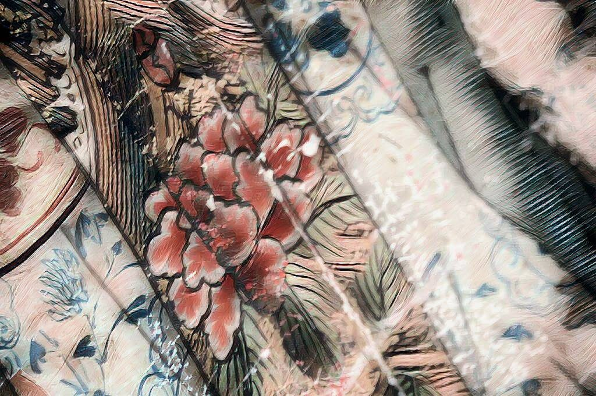

神鬼人

大家好，我是老闆「那個誰」，人生苦短，不如聽個「故事」解解悶？
土地公廟
「弟子焚香上禱，冀望柑仔店顧客增多，老婆給的零用錢也增多，員工受控的比例增多，肚子的皺褶減少，還有還有……」
「什麼，開始了！小二你怎麼不跟我說一聲！！！」
大家好，我是老闆「那個誰」….，前頭字幕放過了？
好吧……
七月將過，鬼差大喊一聲「大家可以回家啦」，不不不，那是開門的時候說的，應該是「大家可以死回來啦」，一清二清的地府專案，把街上遊蕩的都抓得差不多了，但一些有公文、真的很大條或是生前很會捉迷藏的，大家也不要為難鬼差，畢竟公務機關的素質，大家有目共睹，一些退下前線的老鬼，總愛話說當年，強調退休金的正當性，菜鬼就只能舉手稱是，以免調單位被整理，真的不能怪祂們。
鬼門關，那被嚇的人呢？像我家的小嬰兒，都帶去給阿福伯處理，猶記那首兒歌：
一二三四，一二三四
囝仔人著驚無代誌
土地公土地婆保庇
保庇你細漢好搖飼
保庇你大漢會順適
阿福伯是收驚好幫手，不過也會因為對手的層級、能力而有差異，以至於可能去找媽祖、關帝爺、玄天上帝等等神明求救。
不過這年頭鬼害人不多，人害人倒是急劇增長。
神明業務不斷攀升，好一點地希望別被人害，黑一點的希望兒子離婚、上司拉肚子、離職員工不來討資遣費、做黑心事不被罰等等，都敢上廟問神，老闆我看得心驚膽跳。沒看見關老爺7PUPU準備手起刀落了嗎？要不是關平周倉攔著，口念犯天條犯天條、天會收天會收，鬼差就要長期駐點收魂了，這不增加地府業務，添亂？
除了這種交易式的拜神法，還有人把神當老師，當朋友，修行的修行、說真心話的說真心話，真的還好，如果是假的，套句俗話：真的神明帶你上天堂，假的神明帶你進殮房，到時脫褲賣房刷卡笑嘻嘻供養，別說老闆沒提醒你。
不過我是說笑的？誰敢擔這種業力會引爆的事呢？咦………
不說了，阿福伯在門口等了，來看看這次的故事精不精彩。
無論你是誰，給我你的故事，我告訴你不知道的故事。